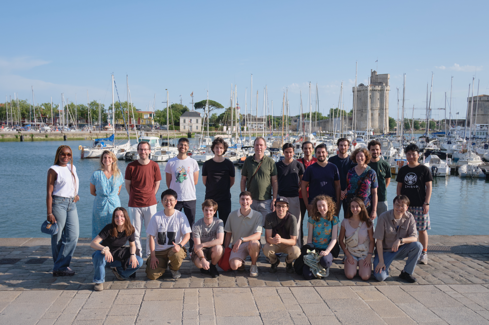
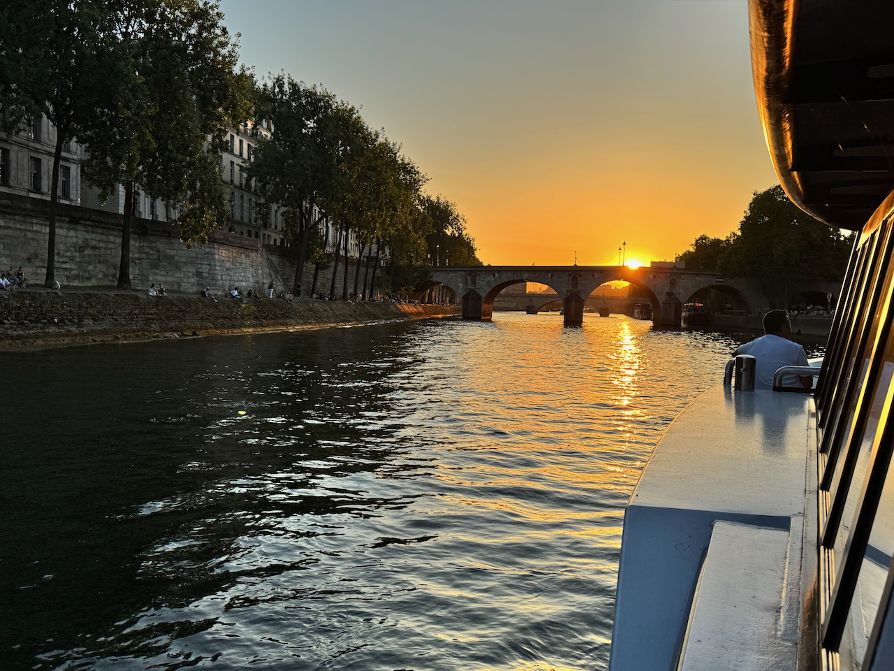
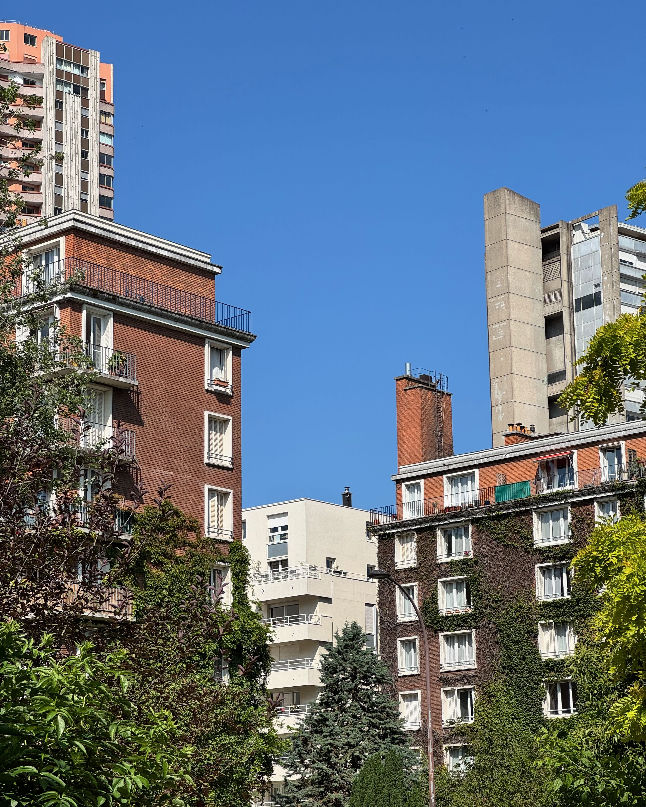
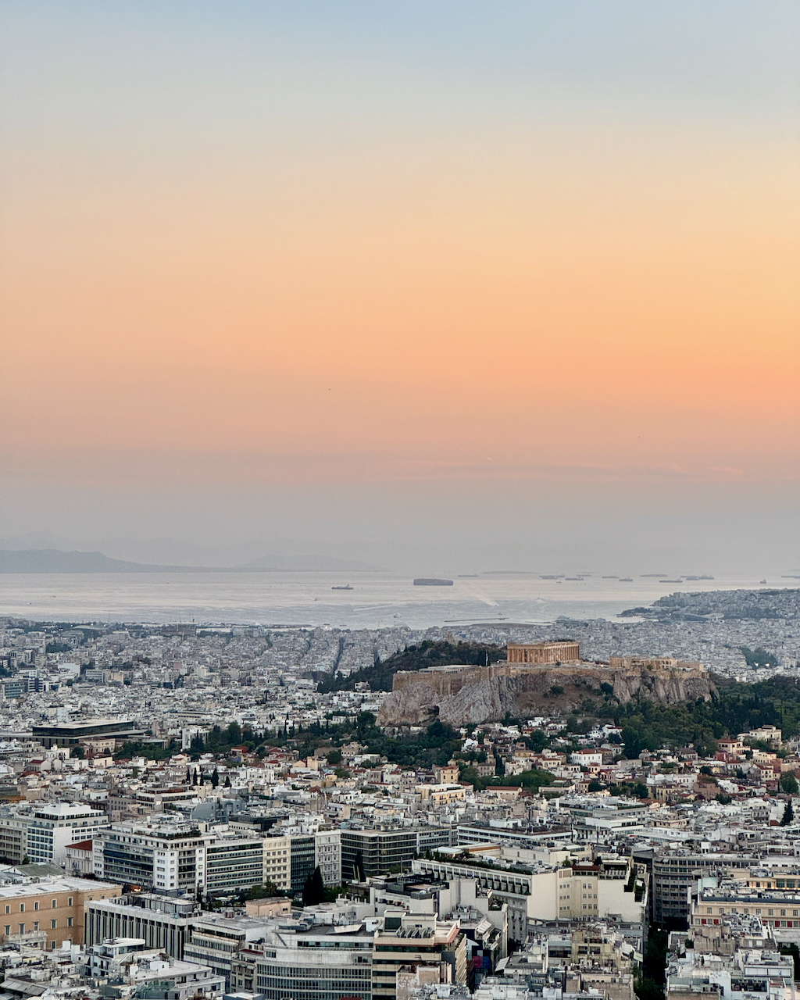
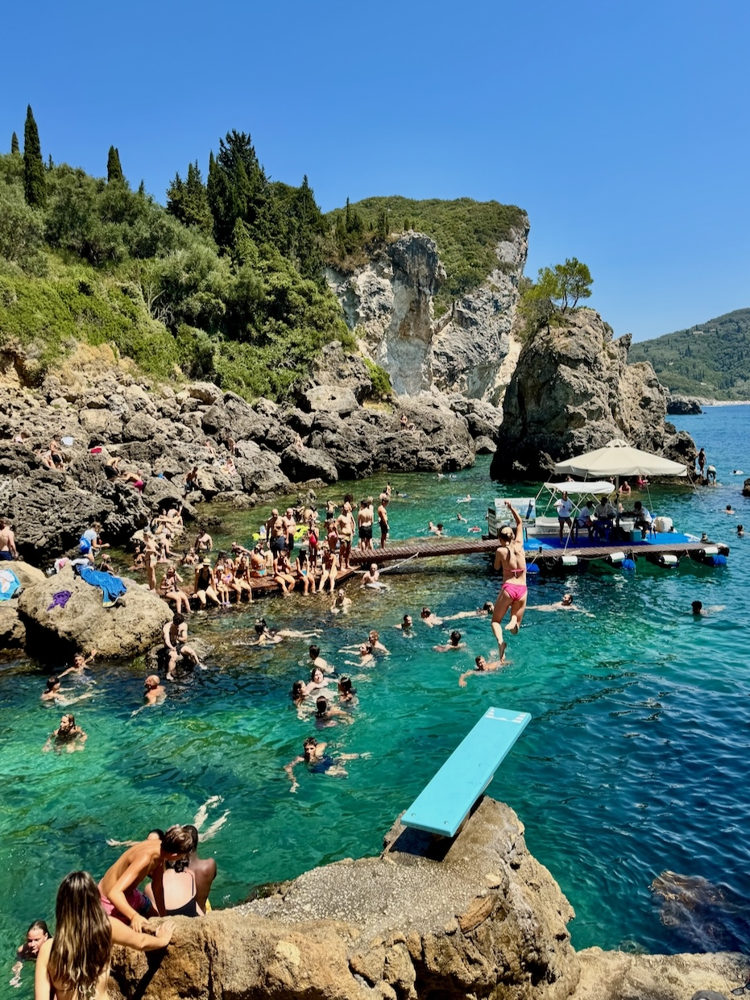

|
Gallery A selection of photos from conferences, team events, and my own photography. |
|
 The VISTA team at La Rochelle, France.
Team retreat 2025  Sunset on the Seine, Paris.
June 2025  View of buildings from Parc de Choisy, Paris.
May 2025  View of Athens at sunset, overlooking the Acropolis, and the Saronic Gulf.
Taken from Lycabettus Hill. September 2024  Summer fun at Palaiokastritsa, Corfu.
July 2024 |